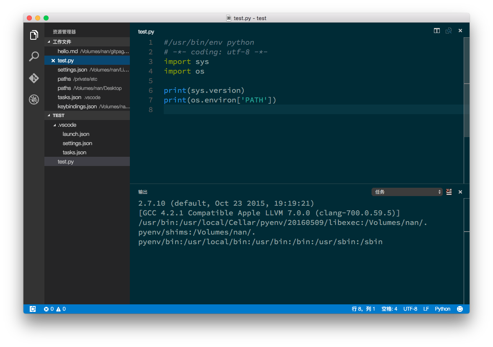

配置vscode为Python开发环境
VScode发布之后就下载试用过,第一印象分成好.不过当时还比较简陋,真正开始上手是1.0发布之后,用来写markdown和Python都很好.感觉可以替代sublime了,毕竟sublime个人用的话一直顶着一个未注册强迫症还是有点难以接受的.
安装Python插件
打开vscode,按F1然后输入:ext install python
安装依赖
Vscode的Python插件代码检查支持Pylint\pep8\flake8,可以通过pip install pylint来进行安装.
我个人选择的是Pylint,具体的配置可以参考https://docs.pylint.org.
基础设置
单击Code-->首选项-->用户设置,或通过快捷键(⌘,)打开用户设置,复制下面代码,根据个人偏好修改.
{
"editor.fontFamily": "Source Code Pro",//字体
"editor.fontSize": 18,//字号
"editor.wrappingColumn": 0,//自动换行
"python.linting.enabled": true,//开启代码检查
"python.pythonPath": "python",//python路径,比如c:\\python35\python.exe
"python.autoComplete.extraPaths": ["~/.pyenv/versions/3.5.1/lib/python3.5/site-packages"]//python自动完成附加目录.
}
运行Python
编写简单的python文件,假设另存为test/test.py
在侧边栏选择打开文件夹,选择test文件夹.
按⌘+shift+B,会提示没有配置文件,选择配置项目文件,类型选择other,粘贴如下代码:
{
"version": "0.1.0",
"command": "python",
"isShellCommand": true,
"args": ["${file}"],
"showOutput": "always"
}
自定义快捷键
⌘+shift+B这个快捷键还是有点麻烦,可以改成自己想要的. 个人比较习惯F5,不过F5默认是启动调试,暂时对vscode的debug还不是很熟悉,用不上.还是改成自己习惯的吧. 选择Code-->首选项-->键盘快捷方式,粘贴如下代码:
[{ "key": "F5","command": "workbench.action.tasks.build" }]
最后看下效果图吧 